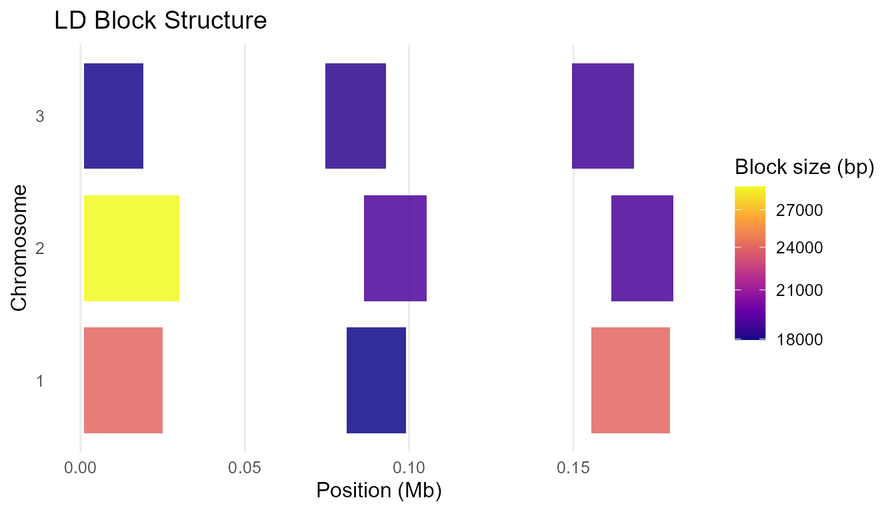
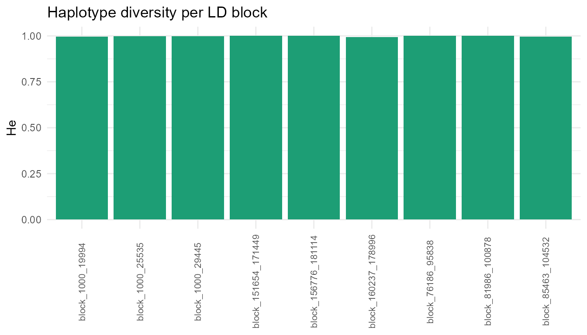

1. Overview
LDxBlocks detects linkage disequilibrium (LD) blocks
from genome-wide SNP data and extends the pipeline into haplotype
reconstruction, diversity analysis, and genomic prediction feature
engineering. Two LD metrics are available:
- Standard r² – fast, no kinship correction, suitable for 10 M+ markers and unstructured populations.
- Kinship-adjusted rV² – corrects for relatedness-induced LD inflation, for livestock, inbred lines, or family-based cohorts. See the LD Metrics vignette for the statistical detail and decision table.
The C++/Armadillo computational core makes the algorithm approximately 40x faster than the original Big-LD implementation for typical window sizes.
This vignette covers the complete pipeline – reading genotype data,
block detection, haplotype analysis, and parameter tuning – using the
ldx_geno example dataset (120 individuals, 230 SNPs, 3
chromosomes, 9 simulated LD blocks).
2. Why LDxBlocks? Relationship to the original Big-LD
LDxBlocks is built on the clique-based segmentation algorithm of Kim et al. (2018). The mathematical core – CLQD bin assignment, maximum-weight independent set block construction, and Bron-Kerbosch clique enumeration – is preserved exactly. LDxBlocks extends that foundation to address three limitations of the original implementation.
2.1 Computational bottleneck
The original Big_LD() calls cor() inside
the boundary-scan loop and once per CLQD() call, with all
matrix operations running through the R interpreter. For a WGS rice
panel with 3 million SNPs across 12 chromosomes, the original
implementation would take days on a workstation.
LDxBlocks replaces the critical paths with eight compiled C++ functions:
compute_r2_cpp(geno, digits = -1L, n_threads = 8L) # ~40x faster
maf_filter_cpp(geno, maf_cut = 0.05) # ~10x faster
boundary_scan_cpp(geno, start, end, half_w, threshold) # ~20x faster
build_hap_strings_cpp(blk_int, na_char) # ~20-50x faster2.2 Memory wall
LDxBlocks enforces a strict never-full-genome memory model. All six supported formats stream genotypes one chromosome window at a time:
be <- read_geno("wgs_panel.vcf.gz")
blocks <- run_Big_LD_all_chr(be, method = "r2", n_threads = 8L)
# Peak RAM ~ n_samples x subSegmSize x 8 bytes = 60 MB for n=5000, w=15002.3 Pipeline gap
The original Big-LD stops at the block table. LDxBlocks provides a complete downstream pipeline:
haps <- extract_haplotypes(be, be$snp_info, blocks, min_snps = 5)
div <- compute_haplotype_diversity(haps)
qtl <- define_qtl_regions(gwas_results, blocks, be$snp_info)
feat <- build_haplotype_feature_matrix(haps, top_n = 5, encoding = "additive_012")$matrix2.4 What is preserved from the original
-
CLQD(): bin vector assignment via maximal clique enumeration -
constructLDblock(): maximum-weight independent set via dynamic programming - All
CLQmode,clstgap, andsplitlogic - Block table column format – drop-in compatible with tools that accept original Big-LD output
3. Example data
dim(ldx_geno) # 120 individuals x 230 SNPs
#> [1] 120 230
head(ldx_snp_info) # SNP, CHR, POS, REF, ALT
#> SNP CHR POS REF ALT
#> 1 rs1001 1 1000 G C
#> 2 rs1002 1 2192 C G
#> 3 rs1003 1 3253 T A
#> 4 rs1004 1 4132 A G
#> 5 rs1005 1 5188 G A
#> 6 rs1006 1 6314 C T
table(ldx_snp_info$CHR) # chr1, chr2, chr3
#>
#> 1 2 3
#> 80 80 70
nrow(ldx_gwas) # toy GWAS markers
#> [1] 204. Step 1 — Reading genotype data
be_vcf <- read_geno("mydata.vcf.gz")
be_csv <- read_geno("mydata.csv")
be_hmp <- read_geno("mydata.hmp.txt")
be_gds <- read_geno("mydata.gds")
be_bed <- read_geno("mydata.bed")
be <- read_geno(ldx_geno, format = "matrix", snp_info = ldx_snp_info)
be
#> LDxBlocks backend
#> Type : matrix
#> Samples : 120
#> SNPs : 230
#> Chr : 1, 2, 3
be$n_samples
#> [1] 120
be$n_snps
#> [1] 230
be$sample_ids[1:4]
#> [1] "ind001" "ind002" "ind003" "ind004"
head(be$snp_info)
#> SNP CHR POS REF ALT
#> 1 rs1001 1 1000 G C
#> 2 rs1002 1 2192 C G
#> 3 rs1003 1 3253 T A
#> 4 rs1004 1 4132 A G
#> 5 rs1005 1 5188 G A
#> 6 rs1006 1 6314 C T
chunk <- read_chunk(be, 1:30)
dim(chunk)
#> [1] 120 30
close_backend(be)5. Step 2 — Phenotype input format
The blues argument accepts pre-adjusted phenotype means.
Four formats are accepted:
# Format 1: Named numeric vector
blues <- c(ind001 = 4.21, ind002 = 3.87, ind003 = 5.14)
# Format 2: Data frame, single trait
blues <- read.csv("blues.csv")
res <- run_haplotype_prediction(geno, snp_info, blocks,
blues = blues,
id_col = "Genotype",
blue_col = "YLD_BLUE")
# Format 3: Data frame, multiple traits
res_mt <- run_haplotype_prediction(geno, snp_info, blocks,
blues = blues_mt,
id_col = "id",
blue_cols = c("YLD", "DIS", "PHT"))
# Format 4: Named list (different individuals per trait)
blues <- list(
YLD = c(ind001 = 4.21, ind002 = 3.87),
DIS = c(ind001 = 0.32, ind003 = 0.28)
)
blues_file <- system.file("extdata", "example_blues.csv", package = "LDxBlocks")
blues <- read.csv(blues_file)
head(blues, 3)
#> id YLD RES
#> 1 ind001 -0.5175 0.6771
#> 2 ind002 0.7635 1.3764
#> 3 ind003 -1.3093 -0.99466. Step 3 — LD block detection
6.1 Genome-wide (recommended)
blocks <- run_Big_LD_all_chr(
ldx_geno,
snp_info = ldx_snp_info,
method = "r2",
CLQcut = 0.55,
leng = 15L,
subSegmSize = 100L,
n_threads = 1L,
verbose = FALSE
)
nrow(blocks)
#> [1] 9
head(blocks)
#> start end start.rsID end.rsID start.bp end.bp n_snps CHR length_bp
#> 1 1 25 rs1001 rs1025 1000 25027 25 1 24028
#> 2 31 50 rs1031 rs1050 81064 99022 20 1 17959
#> 3 56 80 rs1056 rs1080 155368 179371 25 1 24004
#> 4 1 30 rs2001 rs2030 1000 30023 30 2 29024
#> 5 36 55 rs2036 rs2055 86236 105290 20 2 19055
#> 6 61 80 rs2061 rs2080 161515 180473 20 2 189596.2 Single chromosome
blocks_chr1 <- run_Big_LD_all_chr(
ldx_geno,
snp_info = ldx_snp_info,
method = "r2",
CLQcut = 0.55,
leng = 15L,
subSegmSize = 100L,
chr = "1",
n_threads = 1L,
verbose = FALSE
)
nrow(blocks_chr1)
#> [1] 3
unique(blocks_chr1$CHR)
#> [1] "1"6.3 WGS panels: CLQmode = “Leiden” and max_bp_distance
blocks_wgs <- run_Big_LD_all_chr(
be,
CLQmode = "Leiden",
max_bp_distance = 500000L,
CLQcut = 0.70,
subSegmSize = 500L,
leng = 50L,
checkLargest = TRUE,
n_threads = n_threads
)7. Step 4 — Summarising and visualising blocks
summarise_blocks(blocks)
#> CHR n_blocks min_bp median_bp mean_bp max_bp total_bp_covered
#> 1 1 3 17959 24004 21997.00 24028 65991
#> 2 2 3 18959 19055 22346.00 29024 67038
#> 3 3 3 18069 18356 18385.00 18730 55155
#> 4 GENOME 9 17959 18959 20909.33 29024 188184
if (requireNamespace("ggplot2", quietly = TRUE)) {
print(plot_ld_blocks(blocks, colour_by = "length_bp", mb_scale = TRUE))
}
LD block structure coloured by block size
8. Step 5 — Haplotype extraction
haps <- extract_haplotypes(
geno = ldx_geno,
snp_info = ldx_snp_info,
blocks = blocks,
min_snps = 5L,
na_char = "."
)
length(haps)
#> [1] 9
attr(haps, "block_info")
#> block_id CHR start_bp end_bp n_snps phased
#> 1 block_1_1000_25027 1 1000 25027 25 FALSE
#> 2 block_1_81064_99022 1 81064 99022 20 FALSE
#> 3 block_1_155368_179371 1 155368 179371 25 FALSE
#> 4 block_2_1000_30023 2 1000 30023 30 FALSE
#> 5 block_2_86236_105290 2 86236 105290 20 FALSE
#> 6 block_2_161515_180473 2 161515 180473 20 FALSE
#> 7 block_3_1000_19068 3 1000 19068 20 FALSE
#> 8 block_3_74532_92887 3 74532 92887 19 FALSE
#> 9 block_3_149647_168376 3 149647 168376 20 FALSE
head(haps[[1]])
#> ind001 ind002
#> "2022222002222002220020220" "0121011210110111102212101"
#> ind003 ind004
#> "1011121012111011210020110" "0020000000000000002202000"
#> ind005 ind006
#> "2022222002222002220020220" "2022222002222002220020220"9. Step 6 — Haplotype diversity
div <- compute_haplotype_diversity(haps)
head(div)
#> block_id CHR start_bp end_bp n_snps n_ind n_haplotypes He
#> 1 block_1_1000_25027 1 1000 25027 25 120 30 0.9163866
#> 2 block_1_81064_99022 1 81064 99022 20 120 21 0.8988796
#> 3 block_1_155368_179371 1 155368 179371 25 120 26 0.9159664
#> 4 block_2_1000_30023 2 1000 30023 30 120 31 0.9161064
#> 5 block_2_86236_105290 2 86236 105290 20 120 22 0.8955182
#> 6 block_2_161515_180473 2 161515 180473 20 120 25 0.9155462
#> Shannon n_eff_alleles freq_dominant sweep_flag phased
#> 1 2.745726 10.959 0.1833333 FALSE FALSE
#> 2 2.476482 9.207 0.1833333 FALSE FALSE
#> 3 2.667890 10.909 0.1666667 FALSE FALSE
#> 4 2.772723 10.926 0.2000000 FALSE FALSE
#> 5 2.485949 8.933 0.2166667 FALSE FALSE
#> 6 2.642908 10.860 0.1500000 FALSE FALSE
if (requireNamespace("ggplot2", quietly = TRUE)) {
ggplot2::ggplot(div, ggplot2::aes(x = block_id, y = He)) +
ggplot2::geom_col(fill = "#1D9E75") +
ggplot2::theme_minimal() +
ggplot2::theme(axis.text.x = ggplot2::element_text(angle=90, size=8)) +
ggplot2::labs(x=NULL, y="He", title="Haplotype diversity per LD block")
}
Expected heterozygosity per LD block
10. Step 7 — Post-GWAS QTL region definition
qtl <- define_qtl_regions(
gwas_results = ldx_gwas,
blocks = blocks,
snp_info = ldx_snp_info,
p_threshold = 5e-8,
trait_col = "trait"
)
head(qtl[, c("block_id","CHR","n_snps_block","n_sig_markers",
"lead_marker","traits","pleiotropic")])
#> block_id CHR n_snps_block n_sig_markers lead_marker traits
#> 1 block_1_155368_179371 1 25 1 rs1070 TraitB
#> pleiotropic
#> 1 FALSE
subset(qtl, pleiotropic)
#> [1] block_id CHR start_bp
#> [4] end_bp search_start search_end
#> [7] ld_decay_bp n_snps_block n_sig_markers
#> [10] lead_marker lead_p candidate_region_start
#> [13] candidate_region_end candidate_region_size_kb lead_beta
#> [16] sig_markers sig_betas traits
#> [19] n_traits pleiotropic marker_source
#> <0 rows> (or 0-length row.names)11. Step 8 — Feature matrix for genomic prediction
feat_add <- build_haplotype_feature_matrix(
haplotypes = haps,
top_n = 5L,
encoding = "additive_012",
scale_features = TRUE
)$matrix
dim(feat_add)
#> [1] 120 45
G_hap <- tcrossprod(feat_add) / ncol(feat_add)
dim(G_hap)
#> [1] 120 120
round(range(diag(G_hap)), 3)
#> [1] 0.357 1.69812. Step 9 — Parameter auto-tuning
grid <- expand.grid(
CLQcut = c(0.45, 0.55, 0.65), clstgap = 1e5, leng = 15,
subSegmSize = 100, split = FALSE, checkLargest = FALSE,
MAFcut = 0.05, CLQmode = "Density", kin_method = "chol",
digits = -1, appendrare = FALSE, stringsAsFactors = FALSE
)
result <- tune_LD_params(
geno_matrix = ldx_geno,
snp_info = ldx_snp_info,
gwas_df = ldx_gwas,
grid = grid,
prefer_perfect = TRUE,
target_bp_band = c(5e4, 5e5),
seed = 42L
)
result$best_params
#> $CLQcut
#> [1] 0.55
#>
#> $min_freq
#> [1] 0.01
#>
#> $clstgap
#> [1] 1e+05
#>
#> $leng
#> [1] 15
#>
#> $subSegmSize
#> [1] 100
#>
#> $split
#> [1] FALSE
#>
#> $checkLargest
#> [1] FALSE
#>
#> $MAFcut
#> [1] 0.05
#>
#> $CLQmode
#> [1] "Density"
#>
#> $kin_method
#> [1] "chol"
#>
#> $digits
#> [1] -1
#>
#> $appendrare
#> [1] FALSE
result$score_table[, c("CLQcut","n_unassigned","n_forced","n_blocks")]
#> CLQcut n_unassigned n_forced n_blocks
#> 1 0.45 0 1 9
#> 2 0.55 0 0 9
#> 3 0.65 0 0 913. Advanced analyses
13.1 Cross-validation
cv <- cv_haplotype_prediction(
geno_matrix = ldx_geno,
snp_info = ldx_snp_info,
blocks = blocks,
blues = blues,
k = 5L,
n_rep = 3L,
id_col = "id",
blue_col = "YLD",
verbose = FALSE
)
cv$pa_mean13.2 Population comparison
ids <- rownames(ldx_geno)
cmp <- compare_haplotype_populations(
haplotypes = haps,
group1 = ids[1:60],
group2 = ids[61:120],
group1_name = "cycle1",
group2_name = "cycle2"
)
cmp[cmp$divergent, c("block_id", "FST", "max_freq_diff", "chisq_p")]13.3 Diplotype inference, rare-allele collapsing, and label harmonisation
haps_ref <- extract_haplotypes(ref_geno, ldx_snp_info, blocks)
haps_ref <- collapse_haplotypes(haps_ref, min_freq = 0.05, collapse = "nearest")
haps_tgt <- extract_haplotypes(val_geno, ldx_snp_info, blocks)
haps_harm <- harmonize_haplotypes(haps_tgt, haps_ref, max_hamming = 3L)
attr(haps_harm, "harmonization_report")
dip <- infer_block_haplotypes(haps_harm)
head(dip[, c("block_id","id","diplotype","heterozygous","phase_ambiguous")])13.4 Candidate region export and effect decomposition
export_candidate_regions(qtl, format = "bed", chr_prefix = "chr",
out_file = "candidate_regions.bed")
allele_tbl <- decompose_block_effects(haps, ldx_snp_info, blocks,
snp_effects = pred$snp_effects[[1]])
head(allele_tbl[order(-allele_tbl$allele_effect), ])
scan <- scan_diversity_windows(ldx_geno, ldx_snp_info,
window_bp = 50000L, step_bp = 25000L)13.5 Breeding decision tools: haplotype stacking
pred <- run_haplotype_prediction(
geno_matrix = ldx_geno, snp_info = ldx_snp_info, blocks = blocks,
blues = blues_vec, verbose = FALSE
)
ae <- decompose_block_effects(
haplotypes = haps, snp_info = ldx_snp_info,
blocks = blocks, snp_effects = pred$snp_effects[[1]]
)
scores <- score_favorable_haplotypes(haps, allele_effects = ae, normalize = TRUE)
head(scores[, c("id","stacking_index","n_blocks_scored","rank")], 10)
top10 <- scores$id[scores$rank <= 10]
inv <- summarize_parent_haplotypes(haps, candidate_ids = top10,
allele_effects = ae, min_freq = 0.02)
inv[inv$dosage > 0 & inv$is_rare & !is.na(inv$allele_effect) & inv$allele_effect > 0,
c("id","block_id","allele","dosage","allele_freq","allele_effect")]13.6 Haplotype association testing with simpleM correction
test_block_haplotypes() uses a unified Q+K mixed linear
model. The simpleM procedure (Gao et al. 2008, 2010,
2011) estimates the effective number of independent tests (Meff) from
the eigenspectrum of the haplotype allele dosage correlation matrix,
providing family-wise error control that is less conservative than raw
Bonferroni.
blues_vec <- setNames(ldx_blues$YLD, ldx_blues$id)
# EMMAX with FDR — recommended for discovery
assoc_fdr <- test_block_haplotypes(
haplotypes = haps,
blues = blues_vec,
blocks = blocks,
n_pcs = 0L,
sig_metric = "p_fdr",
verbose = FALSE
)
cat("Significant (FDR <= 0.05):", sum(assoc_fdr$allele_tests$significant), "\n")
# Q+K with simpleM Šidák — recommended for family-wise error control
assoc_sm <- test_block_haplotypes(
haplotypes = haps,
blues = blues_vec,
blocks = blocks,
n_pcs = 3L, # Q+K model (used when optimize_pcs = FALSE)
sig_metric = "p_simplem_sidak", # simpleM Šidák correction
meff_scope = "chromosome", # recommended: separate Meff per chr
meff_percent_cut = 0.995, # 99.5% variance threshold (Gao default)
verbose = FALSE
)
# Per-chromosome Meff
assoc_sm$meff$trait$allele$chromosome
# All four p-value columns always present regardless of sig_metric
# p_wald | p_fdr | p_simplem | p_simplem_sidak | Meff | alpha_simplem | ...
head(assoc_sm$allele_tests[order(assoc_sm$allele_tests$p_wald),
c("block_id","allele","effect","SE",
"p_wald","p_simplem","p_simplem_sidak","Meff")], 5)
# Automatic PC selection — let the data choose n_pcs via BIC/lambda hybrid
# Recommended when lambda_GC is far from 1.0 with a fixed n_pcs.
assoc_opt <- test_block_haplotypes(
haplotypes = haps,
blues = blues_vec,
blocks = blocks,
optimize_pcs = TRUE, # triggers BIC/lambda model selection
optimize_pcs_max = 10L, # test k = 0..10
optimize_method = "bic_lambda", # recommended: |lambda-1| + 0.01*BIC
sig_metric = "p_simplem_sidak",
meff_scope = "chromosome",
plot = TRUE, # saves PDF plots including pca_grm.pdf
out_dir = "results", # and grm_scree.pdf
verbose = TRUE
)
# Inspect selection table
print(assoc_opt$pc_model_selection)
# n_pcs BIC lambda_gc score selected
# 0 1234.1 1.021 0.0210 FALSE
# 1 1231.5 1.015 0.0150 FALSE
# 2 1230.8 1.003 0.0033 FALSE
# 3 1232.1 0.999 0.0011 TRUE <-- selected
# Multi-trait: all traits share the same GRM
assoc_mt <- test_block_haplotypes(
haplotypes = haps,
blues = ldx_blues,
blocks = blocks,
id_col = "id",
blue_cols = c("YLD", "RES"),
n_pcs = 3L,
sig_metric = "p_simplem_sidak",
verbose = FALSE
)estimate_diplotype_effects() now supports the same
correction set as test_block_haplotypes(). All five p-value
columns are always present in $omnibus_tests;
sig_metric controls which drives the
significant flag:
dip <- estimate_diplotype_effects(
haplotypes = haps,
blues = blues_vec,
blocks = blocks,
min_n_diplotype = 3L,
sig_metric = "p_omnibus_simplem_sidak", # recommended
meff_percent_cut = 0.995,
verbose = FALSE
)
# All five columns always present:
# p_omnibus_adj | p_omnibus_fdr | p_omnibus_simplem | p_omnibus_simplem_sidak | Meff
head(dip$omnibus_tests[, c("block_id","trait","F_stat","p_omnibus",
"p_omnibus_fdr","p_omnibus_simplem_sidak",
"Meff","significant")], 5)
# Blocks showing overdominance (heterosis candidates)
dip$dominance_table[dip$dominance_table$overdominance,
c("block_id","allele_A","allele_B","a","d","d_over_a")]13.7 Breeding decision summary
See section 13.5 above and the complete example in
?score_favorable_haplotypes.
13.8 Cross-population GWAS validation
compare_block_effects() validates whether haplotype
effects from one population replicate in another. It computes IVW
meta-analytic effects, Cochran Q heterogeneity (tests whether effect
sizes differ between populations), I² inconsistency, and direction
agreement per block.
Key distinction: boundary_overlap_ratio
is an output column automatically computed from the
block tables you supply — you cannot set it.
boundary_overlap_warn is an input
parameter (default 0.80) that controls when
boundary_warning = TRUE is raised in the output.
# Best practice: use Pop A's block boundaries for Pop B to maximise
# shared alleles and ensure haplotype strings are directly comparable.
haps_B_harm <- harmonize_haplotypes(
extract_haplotypes(geno_B, snp_info, blocks_A), # same block coordinates
reference = haps_A
)
assoc_A <- test_block_haplotypes(haps_A, blues = blues_A, blocks = blocks_A,
sig_metric = "p_simplem_sidak")
assoc_B <- test_block_haplotypes(haps_B_harm, blues = blues_B, blocks = blocks_A,
sig_metric = "p_simplem_sidak")
# block_match = "id" (default): match by block_id string
# block_match = "position": match by genomic IoU -- use when blocks differ
conc <- compare_block_effects(
assoc_A, assoc_B,
pop1_name = "PopA",
pop2_name = "PopB",
blocks_pop1 = blocks_A,
blocks_pop2 = blocks_B, # Pop B own block table (may differ)
block_match = "position", # recommended when blocks not identical
overlap_min = 0.50,
direction_threshold = 0.75,
boundary_overlap_warn = 0.80
)
# $concordance — one row per block: IVW effect, Q_stat, I2, replicated, ...
conc$concordance[conc$concordance$replicated,
c("block_id","n_shared_alleles","direction_agreement",
"meta_p","Q_p","I2","replicated")]
# $shared_alleles — per-allele IVW detail
head(conc$shared_alleles[, c("block_id","allele","effect_pop1","effect_pop2",
"direction_agree","ivw_effect","ivw_SE")])
print(conc) # summary: n blocks compared, n replicated, median I²Interpreting the output:
| Statistic | Strong replication | Concern |
|---|---|---|
direction_agreement |
≥ 0.75 | < 0.5 (effects inconsistent) |
Q_p |
> 0.05 (no heterogeneity) | < 0.05 (effect sizes differ) |
I2 |
< 25% | > 50% (substantial heterogeneity) |
boundary_warning |
FALSE | TRUE (LD structure may differ) |
match_type |
"exact" or "position"
|
"pop1_only" (no overlapping Pop2 block) |
13.9 Cross-population validation from external GWAS
When GWAS was run outside LDxBlocks, use
compare_gwas_effects(). It accepts either the output of
define_qtl_regions() (recommended, most auditable) or raw
GWAS data frames plus block tables (convenience path).
# Path 1: pre-mapped (recommended)
# define_qtl_regions() maps each marker to its LD block and identifies
# the lead SNP (smallest p-value) as the block representative.
qtl_A <- define_qtl_regions(gwas_A, blocks, snp_info, p_threshold = 5e-8)
qtl_B <- define_qtl_regions(gwas_B, blocks, snp_info, p_threshold = 5e-8)
conc_gwas <- compare_gwas_effects(
qtl_pop1 = qtl_A,
qtl_pop2 = qtl_B,
blocks_pop1 = blocks_A,
blocks_pop2 = blocks_B,
block_match = "position",
overlap_min = 0.50,
pop1_name = "PopA",
pop2_name = "PopB"
)
# Path 2: raw GWAS + blocks (calls define_qtl_regions internally)
# When SE is absent, it is derived from BETA and P via z-score.
# Column names are flexible: use beta_col, se_col, p_col arguments.
conc_raw <- compare_gwas_effects(
gwas_pop1 = gwas_A,
gwas_pop2 = gwas_B,
blocks_pop1 = blocks,
blocks_pop2 = blocks,
snp_info_pop1 = snp_info, # snp_info_pop2 reuses this when NULL (shared panel)
pop1_name = "PopA",
pop2_name = "PopB",
p_threshold = 5e-8,
beta_col = "BETA", # change if named differently in your GWAS output
se_col = "SE", # NULL or absent: derived from z-score automatically
p_col = "P"
)
# Same output class as compare_block_effects()
# Extra columns: lead_marker_pop1/pop2, lead_p_pop1/pop2,
# se_derived_pop1/pop2, both_pleiotropic
conc_gwas$concordance[conc_gwas$concordance$replicated, ]
print(conc_gwas)Note that because external GWAS provides one lead SNP per block (not
multiple haplotype alleles), effect_correlation and Cochran
Q are always NA. Replication is judged by direction
agreement and meta_p ≤ 0.05.
13.10 Within-block and between-block epistasis detection
LDxBlocks v0.3.1 adds three epistasis functions that all operate on
GRM-corrected REML residuals from the same null model as
test_block_haplotypes().
Within-block SNP interaction scan
(scan_block_epistasis): tests all C(p,2) SNP pairs inside
significant blocks for the interaction term aaij in y = mu + aixi +
ajxj + aaij(xixj) + e. Corrected by Bonferroni and simpleM
Sidak within each block; sig_metric controls which drives
the significant flag.
Between-block trans-haplotype scan
(scan_block_by_block_epistasis): tests significant
haplotype alleles against every allele at all other blocks. Identifies
genetic background dependence at haplotype resolution — a form of
epistasis that single-block and single-SNP analyses cannot detect.
Single-block fine-mapping
(fine_map_epistasis_block): identifies the specific
interacting SNP pair within a block. Auto-dispatches to exhaustive
pairwise scan (p <= 200 SNPs) or LASSO with interaction terms (p >
200 SNPs).
# Within-block epistasis (restricted to significant_omnibus blocks)
epi_within <- scan_block_epistasis(
assoc = assoc,
geno_matrix = res$geno_matrix,
snp_info = snp_info,
blocks = blocks,
blues = blues_list,
haplotypes = haps,
trait = "BL",
sig_metric = "p_simplem_sidak",
max_snps_per_block = 300L
)
print(epi_within)
epi_within$results[epi_within$results$significant, ]
# Between-block trans-haplotype epistasis
epi_between <- scan_block_by_block_epistasis(
assoc = assoc,
haplotypes = haps,
blues = blues_list,
blocks = blocks,
trait = "BL"
)
print(epi_between)
# Fine-map a single block
# y_resid must be pre-computed from the REML null model
fine <- fine_map_epistasis_block(
block_id = "block_12_1054210_1086071",
geno_matrix = res$geno_matrix,
snp_info = snp_info,
blocks = blocks,
y_resid = my_reml_residuals,
method = "auto"
)
head(fine)Statistical note. With n=204 individuals and Bonferroni correction over ~300,000 within-block pairs, the detection threshold is approximately p < 1.7 × 10^-7 per block. Power to detect pairwise SNP epistasis at this threshold is low unless the interaction effect is large (|aa| > ~0.3 SD). The between-block trans-haplotype scan is better powered because each haplotype dosage column aggregates multi-SNP variation, reducing the effective number of tests while increasing the signal-to-noise ratio per test.
14. References
- Kim S-A et al. (2018). Bioinformatics 34(4):588-596. https://doi.org/10.1093/bioinformatics/btx609
- Gao X, Starmer J, Martin ER (2008). A multiple testing correction method for genetic association studies using correlated SNPs. Genetic Epidemiology 32:361-369. https://doi.org/10.1002/gepi.20310
- Gao X et al. (2010). Avoiding the high Bonferroni penalty in GWAS. Genetic Epidemiology 34:100-105. https://doi.org/10.1002/gepi.20430
- Gao X (2011). Multiple testing corrections for imputed SNPs. Genetic Epidemiology 35:154-158. https://doi.org/10.1002/gepi.20563
- Borenstein M et al. (2009). Introduction to Meta-Analysis. Wiley.
- Higgins JPT, Thompson SG (2002). Quantifying heterogeneity in a meta-analysis. Statistics in Medicine 21:1539-1558. https://doi.org/10.1002/sim.1186
- Tong J et al. (2025). Theor Appl Genet 138:267. https://doi.org/10.1007/s00122-025-05045-0
- Tong J et al. (2024). Theor Appl Genet 137:274. https://doi.org/10.1007/s00122-024-04784-w
- Mangin B et al. (2012). Heredity 108(3):285-291. https://doi.org/10.1038/hdy.2011.73
- VanRaden PM (2008). Journal of Dairy Science 91(11):4414-4423. https://doi.org/10.3168/jds.2007-0980
- Nei M (1973). PNAS 70(12):3321-3323. https://doi.org/10.1073/pnas.70.12.3321
- Traag VA et al. (2019). Scientific Reports 9:5233. https://doi.org/10.1038/s41598-019-41695-z